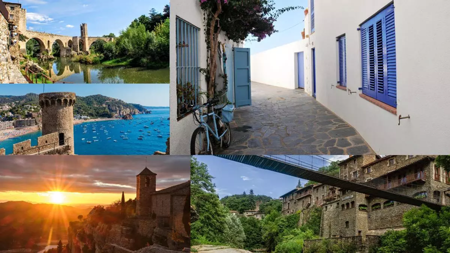

Los pueblos más bonitos de Cataluña
...según encuesta a blogueros de viaje

Esta ha sido una iniciativa de los chicos del blog
Mil Viatges
(donde hay más pueblos referenciados).
El resultado de los 10 primeros pueblos ganadores se muestra en este site. ¡Agrega el tuyo!
- Próximo Destino.
(Meritxell Beltrán): Les Cases d'Alcanar
- Petits Viatjers. (Montse
Delgado): Siurana
- Un viaje de libros.
(Silvia Monasterio): Calella de Palafrugell
- 365 sábados
viajando.(Virginia y Fran): Tossa de Mar
- Apuntes de viaje-blog privado. (María Teresa Trilla): Prades
- Con arena en la mochila.
(Robert y Eli): Besalú
- Cómete el mundo. (Henar y
Aitor): Pals
- Quaderns de bitàcola.
(Cèlia y Enric): Montblanc
-
Viatges Pedraforca.
(Daniel): Castellar de n'Hug
-
Estem de vacances (Xavi y
Txell): Peratallada
...